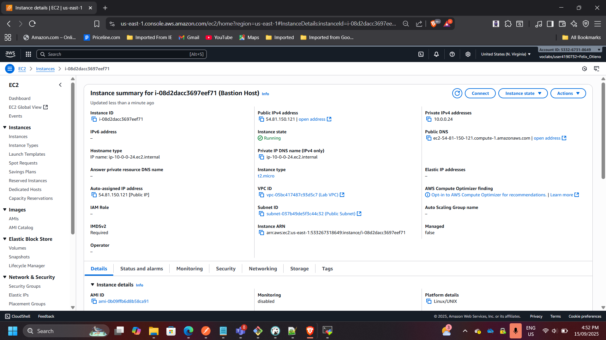
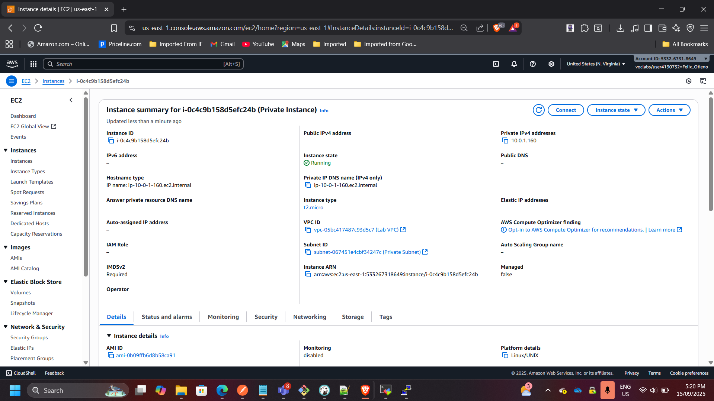
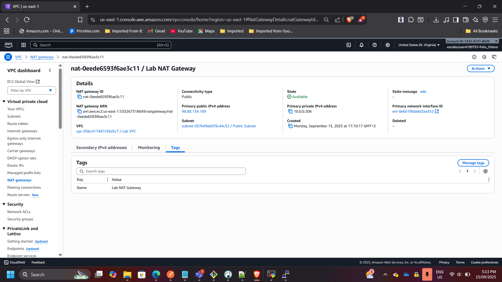
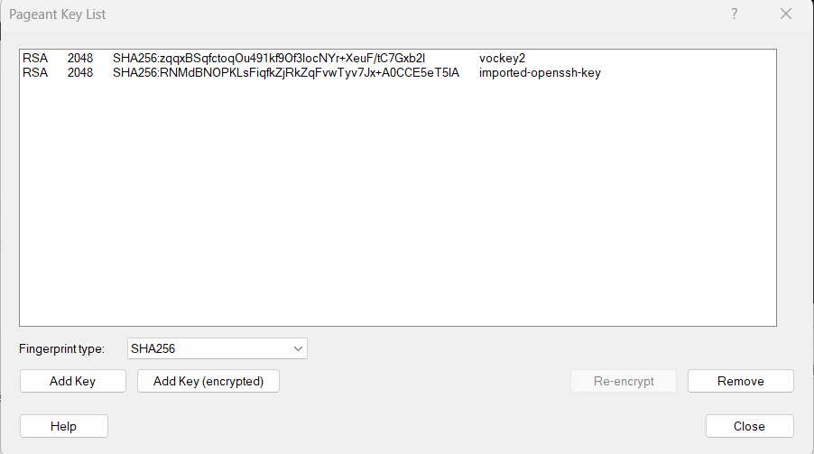
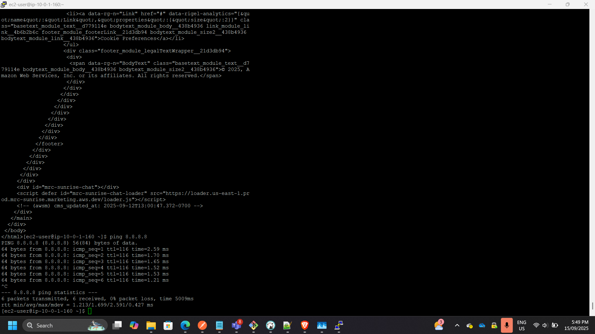
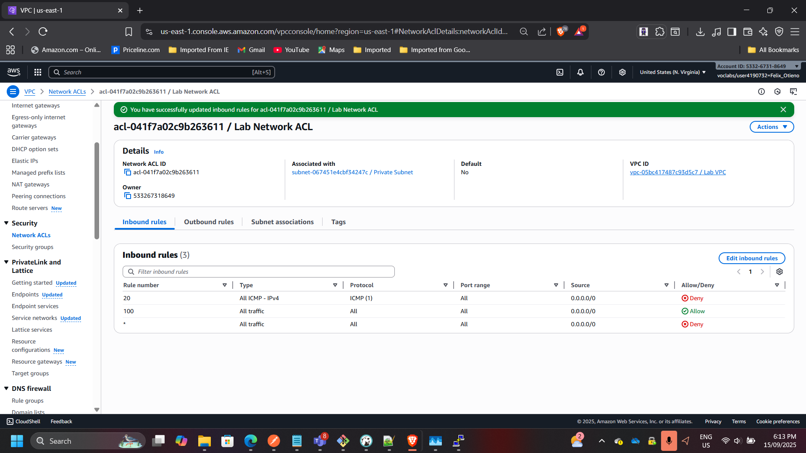
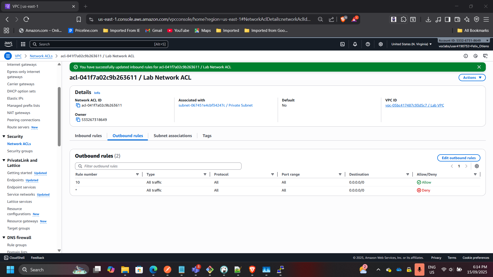

Secure VPC Networking Environment for Café Application
Project: Secure VPC Networking Environment for Café Application
Timeline: September 2025
Role: Cloud Solutions Architect
Skills: AWS VPC, Subnets, Bastion Host, NAT Gateway, EC2, Security Groups, Network ACLs
Project Summary
Designed and deployed a secure Amazon VPC architecture for a café’s application. The solution ensured administrative access via a bastion host, placed application workloads in private subnets, and implemented layered security controls with NAT Gateway, security groups, and custom Network ACLs. The project demonstrates hands-on AWS networking, access control, and secure environment design.
Objectives
- Build a VPC with public and private subnets for workload separation.
- Deploy a bastion host for secure administrative access.
- Enable outbound internet connectivity for private resources via NAT Gateway.
- Enforce resource- and subnet-level security with security groups and custom NACLs.
- Validate connectivity and access restrictions across resources.
Implementation & Highlights
1. Public Subnet & Bastion Host
- Created a public subnet with route to Internet Gateway.
- Deployed bastion host EC2 with SSH restricted to admin IP.

2. Private Subnet & Application Server
- Created a private subnet for application workloads.
- Deployed private EC2 instance, accessible only via bastion host.

3. NAT Gateway for Outbound Connectivity
- Launched a NAT Gateway in the public subnet with Elastic IP.
- Configured route table to allow private instance outbound access for updates.

4. Secure SSH Passthrough
- Enabled SSH agent forwarding to access private instance via bastion host.
- Verified successful login and outbound connectivity (ping test).
 
5. Custom Network ACL
- Created and applied custom NACL to private subnet.
- Configured rule to block ICMP traffic → verified denial of ping after rule applied.
 
Outcome & Impact
- Delivered a secure VPC environment with layered security controls.
- Achieved isolation of workloads in private subnet while maintaining required internet access.
- Implemented best practices for administrative access via bastion host.
- Gained practical skills in designing production-ready AWS VPC architectures.